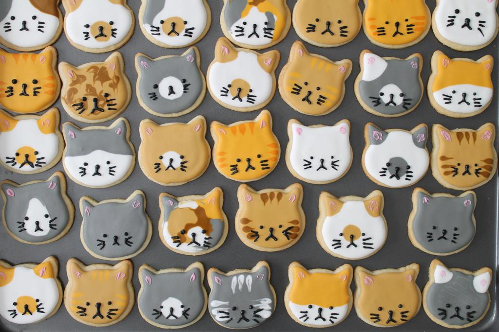

Cat Sugar Cookies

Description:
These sugar cookies are the cutest. They taste as good as they look! Give them a try if you like cats!
Ingredients:
- 1 cup unsalted butter
- 1 cup sugar
- 1 large egg
- 1 teaspoon almond extract
- 3 cups flour
- 1 teaspoon baking powder
- ¼ teaspoon salt
- ROYAL ICING:
- 2 pounds (907 g) confectioner's sugar
- 5 tablespoons (about 50 g) meringue powder
- 2 to 3 teaspoons oil-free extract (I like vanilla)
- ½ to ¾ cups warm water
- many choices of food coloring for fur colors: I chose brown, black, yellow, pink, and white.
Steps:
- MIXING UP THE COOKIES: Cream together butter and sugar until light and fluffy.
- Add egg and almond extract and mix to combine.
- Mix flour, baking powder, and salt in separate bowl,
- Add flour mixture in three parts, while mixing. Mix until a smooth ball forms.
- Pat into disk, wrap in plastic wrap, and chill in the refrigerator for at least 4 hours. The dough can also be frozen for longer storage.
- FORMING AND BAKING: Preheat the oven to 350 degrees F.
- Remove dough from fridge (if in freezer, thaw overnight in fridge before rolling out) and set up work area.
- Roll to ⅛-inch thickness, and cut out as many kitties as you can. Reroll scraps once, as any more than that can cause the dough to bake with uneven tops and toughen the cookies.
- Bake 7 to 8 minutes, or when cookie has lost its shiny top. Don't brown or overbake, though the kitty ears will be a tad brown. Cool for a few minutes on baking sheet then remove to rack to cool completely. Cookies can be frozen if wrapped tightly after being cooled completely. They keep well in an airtight container at room temperature for a few days. Wait at least 24 hours before decorating with royal icing.
- THE ROYAL ICING PREP: Stir the flavoring/extract into half the water.
- Using a paddle attachment on a stand mixer, gently mix the sugar and meringue powder. No need to sift.
- With the mixer on its lowest setting slowly add the water/flavoring mix to the sugar/meringue. The icing will become thick and lumpy.
- Continue to add the remaining water, little by little, until the mixture reaches a thick, honey like consistency. You may not need all of the water, so watch carefully.
- Now, turn the mixer to medium speed and whip 2 to 4 minutes until icing is thick and fluffy. Mixing time can vary greatly so watch carefully and stop mixing when the icing forms soft peaks. This makes about 5 cups. This keeps for a week well wrapped at room temperature.
- DECORATING: Divide the icing into various bowls, tinting each your desired cat colors. Keep each bowl covered until ready to use. Royal icing dries out really fast: you don't want crusty bits clogging your piping tips. If you need a primer on piping consistency, look at Sweet Sugar Belle's site for 20 second icing. That's approximately what I use. In general, experiment and be flexible.
- Pipe the fur patterns first, then allow to dry, preferably overnight. Add the face. Allow to dry overnight before serving. Me-OW!